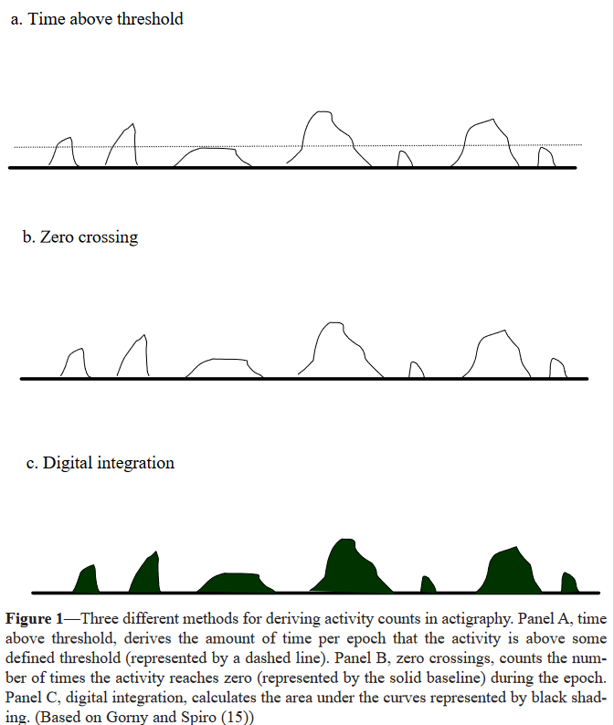

Notes
Article details
Title: The Role of Actigraphy in the Study of Sleep and Circadian Rhythms
Authors: Sonia Ancoli-Israel, Roger Cole, Cathy Alessi, Mark Chambers, William Moorcroft, Charles P. Pollak
Citation: (Ancoli-Israel et al., 2003)
Bibliography: Ancoli-Israel, S., Cole, R., Alessi, C., Chambers, M., Moorcroft, W. and Pollak, C.P. (2003) The Role of Actigraphy in the Study of Sleep and Circadian Rhythms. 26 (3).
“Actigraphs today have movement detectors (e.g., accelerometers) and sufficient memory to record for up to several weeks. Movement is sampled several times per second and stored for later analysis. Computer programs are used to derive levels of activity/inactivity, rhythm parameters (such as amplitude or acrophase) and sleep/wake parameters (such as total sleep time, percent of time spent asleep, total wake time, percent of time spent awake and number of awakenings).”
Actigraphy advantages:
- record 24 hours, several weeks
- cheap
Used exensively for sleep:
- quality
- disorders
Activity count derivation methods and problems:

time above threshold
“The “time above threshold” strategy cumulatively counts the amount of time per epoch that the level of the signal produced in response to motion is above some threshold (commonly 0.1 to 0.2 g). Two potential problems with this strategy are that the degree to which the amplitude is above threshold is ignored and that the acceleration of the movement is not reflected.”
zero-crossing method
“The “zero-crossing method” counts the number of times per epoch that the activity signal level crosses zero (or very near zero). Three potential problems with this approach are that the amplitude of the movement is ignored, the acceleration of movements is not registered, and high frequency artifacts may potentially be counted as considerable movement.”
digital integration
“‘Digital integration’ involves sampling the accelerometry output signal at a high rate, then calculating the area under the curve for each epoch. Rectifying the analog signal doubles the amount of data available for analysis. Digital integration reflects acceleration and amplitude of movement, however duration and frequency of movements are not shown.”
different methods, different problems, hard to compare
“Many investigators have begun to report actigraphy data simply as activity counts. However, different devices, different data collection strategies,12 and different scoring algorithms produce very different counts for the same activity.15 These differences have made direct comparisons between laboratories and clinics difficult and contentious. Although relative changes in activity can be meaningful, more direct comparisons following computer processing of the data (such as sleep/wake scoring) are more meaningful.”
suggest using actigraphy beyond sleep, e.g. with ‘demented’ patients
“Actigraphy is useful in populations where PSG would be difficult to record, such as in demented patients and in astronauts in space”
sleep disorders
“One possible application of actigraphy in sleep medicine has been the diagnosis and assessment of clinical sleep disorders (see Table 3). Compared to traditional polysomnography, the actigraph is relatively unobtrusive and can record for multiple days and nights. This may be useful in the assessment of insomnia patients, whose sleep has been shown to be quite variable from night to night. Moreover, actigraphy makes home recording more accessible, permitting the evaluation of patients in their natural sleeping environment and eliminating laboratory effects that may alter a patient’s typical sleep patterns.”
sensitivity may not capture all movement/acceleration, e.g. restless legs
“Actigraphic data were collected in 5-second epochs and compared directly to EMG activity of similar-length epochs. The results of this analysis revealed that although there was a high correlation between the two collection methods, actigraphy substantially underestimated the number of movements yielded by the EMG. However, this failure may be attributable to the low sensitivity of the actigraph used, which is only able to detect accelerations greater than 0.1 g.”
calculating circadian rhythms

“To extract this information, the raw activity values are analyzed directly. The most popular method has been cosinor analysis, in which a cosine curve with a period at or near 24 hours is fit to the data by the least-squares method. The parameters that are of interest are acrophase (time of peak activity), amplitude (peak-to-nadir difference) and mesor (mean) of the fitted curve (see Fig 2). A “five-parameter extended cosinor analysis” has also been used to provide a better fit to activity data, which typically deviate from the shape of a cosine curve.109,110 The five model parameters are circadian minimum, amplitude, acrophase, alpha (width of the rhythm) and beta (steepness of fitted curve, which can approximate a square wave if beta is high).”
actigraphy and circadian rhythms in psychiatry
“These studies, taken together, provide preliminary evidence that actigraphy may prove useful for characterizing and monitoring the circadian rhythm disturbances that often accompany psychiatric disorders.”